RFC and evidence pack · PR #42 (merged)
Cathy as an agent manager
Named chats, model and thinking-effort pickers, stop and interrupt, attachments, and artifacts Cathy makes and you can share by link. Everything below comes from automated runs; the tables are generated from their results.
withchris-share.withchris.workers.dev returns Cloudflare error 1042 (no such Worker). Switching an artifact to Link works, but the link won't open yet.To finish: on main, run
git apply patches/workflows.patch && git rm -q patches/workflows.patch && git commit -am 'Deploy R2 and share' && git push. The deploy then creates the share Worker.
This pack's preview clone: withchris-admin-cathy-yysxyt-evidence.withchris.workers.dev. Log in with your admin password. It's its own copy of everything (own chats, own D1 and R2), with real Claude and a real box, so try anything. It's torn down when this pack's PR closes.
Share links won't open there either until the workflow patch is applied (previews deploy the share Worker only after that).
Verdict
| Goal | What was checked | Result |
|---|---|---|
| Manage chats | Cathy names chats; you rename (your name wins); search; archive and unarchive | Proven |
| Model and effort | Pickers in the message box, saved per chat, labelled on each reply. Real Claude accepted effort and thinking on Opus 5.5 and Sonnet 5.5 (Haiku not tried). | Proven |
| Stop and interrupt | Square stop button; queue or interrupt; partial reply kept; next turn works | Proven |
| Attachments | Real Claude described an attached image correctly (a half-transparent red pixel: "Pink") | Proven |
| Artifacts in chat | publish_artifact → card with preview → full screen; Markdown with maths; versions | Proven |
| Sharing | Private or link; link opens logged out; private or a new link kills the old one. Proven locally; not live until the share Worker is deployed. | Partly |
| Safety | Share Worker reaches nothing else; HTML artifacts sandboxed; uploads per chat; limits | Proven |
Unit tests: 99 pass, 0 fail. Browser test: 22 of 22 steps pass. Security checks: 16 of 16 pass.
What this does not prove yet
- Share links on real infrastructure. Proven locally (fresh logged-out browser, private and new-link revocation, 16 security probes), but not on Cloudflare: no share Worker is deployed yet. After the patch, the preview re-runs the full test, sharing included.
- Haiku 5.5 with effort and thinking. Opus 5.5 and Sonnet 5.5 accepted them against the real API; Haiku wasn't tried. If it rejects them, the reply shows an error notice, and the fix is to drop it from
MODELS. - Whether summarised thinking shows with real Claude. The Thinking block is tested with the stand-in model; the real run doesn't check for it. Claude may skip thinking on short tasks at low or medium effort. Try a hard question at High effort in the preview.
RFC
Problem
Cathy works, but the chat screen is bare next to the Claude Code app. Chats can't be named or found. You can't choose the model or how hard it thinks, and you can't stop it mid-task. You can't hand it a file. Anything it makes stays as text in a chat or a commit, with no simple way to view or share it.
Goals
- Manage chats: Cathy names them, you rename (your name wins), search, archive and unarchive.
- Control the agent: model and effort per chat; stop; interrupt with a new message.
- Give her things: attach images and files.
- Get things back: artifacts (documents, worksheets, pages, images, PDFs) shown in the chat.
- Share them: private (admin only) or anyone with the link.
Not goals: email invites, a public gallery, a cathy CLI, PR or diff views. All are possible later on the same backend.
Design
iPhone / browser
│ (Cloudflare Access: learn@withchris.uk)
▼
admin Worker ── /api/cathy/* ──▶ Cathy Worker (private) ──▶ Session DO per chat ──▶ Sandbox box
│ │ (stop, interrupt,
│ │ model, effort)
▼ ▼
D1 registry R2 withchris-files
▲
anyone with a link │ GET /share/a/<token> only
│ │
▼ │
share Worker (public) ──────────────┘
- Data. D1 holds the facts: chats (now with
named_by,model,effort),uploads,artifactsandartifact_versions. R2 holds the bytes atuploads/<id>andartifacts/<id>/v<n>. Republishing adds a version, and the link always serves the latest. - Publishing. Cathy calls
publish_artifact(path, title, visibility?, id?). The Worker reads the file from her box, stores it and posts a card in the chat. She never holds storage credentials. - Attachments. The page uploads each file first, then sends the message with their ids. The Session keeps only ids that belong to this chat, writes the files into her box at
/uploads/, and passes images and PDFs to Claude inline. - Model and effort. The choices live in
MODELSincathy/worker/wrangler.jsonc, which is the one source of truth. They're read at the start of every turn and sent to Anthropic aseffortplus adaptive, summarised thinking. - Stop and interrupt. Each turn has an
AbortController. On a stop, her memory keeps only completed steps, so it never holds a tool call without its result. Her thinking isn't stored in memory, because it's signed per model and would break the chat after a model switch. - Sharing. A small public Worker,
share/, matches onlyGET|HEAD /a/<20-char token>[/download]and forwards a bare request with no cookies or query string. Cathy answers only forlinkartifacts. Responses are cached for 60 seconds, so un-sharing takes effect within a minute.
Alternatives considered
| Option | Why not (for now) |
|---|---|
A cathy CLI in her box (cathy file publish x.html) | It needs a public write endpoint and a token in her box. A tool gives the same result with no new door to the internet. It can still be added later as a layer over the same API. |
| File bytes in D1 (the first draft on this branch) | D1 caps a value at 2 MB and the database at about 500 MB, so files had to be split into pieces. R2 is built for files and has 10 GB free. |
| R2 keys in Cathy's box | Keys would open the whole bucket. Nothing would be recorded in D1, so no cards and no Artifacts page. |
| One Access-protected artifacts site with a public path exempted | It works, but one misconfigured Access rule exposes everything. A separate Worker that can only do one thing is easier to reason about. |
| Public gallery and email invites | Dropped at your request. "Anyone with the link" covers sharing a worksheet. |
Security model
- Admin, the API and private artifacts sit behind Cloudflare Access as before. The share Worker is the only new public surface. It holds no data and no secrets, and forwards a single route.
- Link tokens are 20 characters from a 32-letter alphabet (100 bits), checked by format before any lookup. "New link" replaces the token.
- Every stored file is served with
Content-Security-Policy: sandbox allow-scripts …and noallow-same-origin, plusnosniff. In admin, previews are also in sandboxed iframes. So an HTML artifact can run its own scripts but can't read your cookies, use storage, or call admin's API. The probe below shows this. - Attachment ids are trusted only if they belong to the chat. File names are cleaned. A 25 MB limit is enforced on the server.
- Cathy's
artifactsskill makes artifacts private by default and forbids student or parent details in anything shared.
Rollout and rollback
- Merged and deployed (Cathy, then admin). D1 migration
0002runs on first use and is safe to re-run. The R2 bucketwithchris-fileswas created by the preview workflow from one of my in-progress pushes. - Still to do: apply
patches/workflows.patchon main. Its deploy createswithchris-share, and from then on share links work. - Old chats keep working. The Session adds a
metacolumn to existing message tables, and old messages show without labels. - Rollback: revert PR #42. The bucket, share Worker and new D1 tables can stay; the old code ignores them.
- Later: move share to
artifacts.withchris.ukwhen the domain moves over. That's one route and one var.
User walkthrough
Every feature, used the way you would, on an iPhone-sized screen at 2x, with captions. It uses the local stack with the stand-in model, so replies are scripted, and it's recorded by packs/cathy-agent-manager/walkthrough.ts.

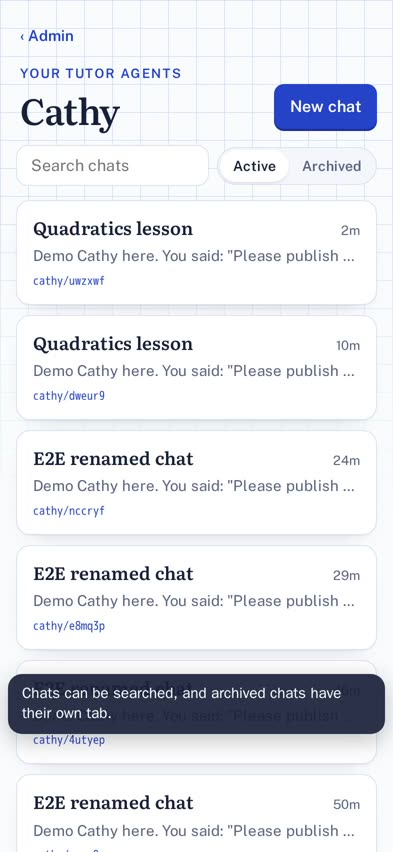

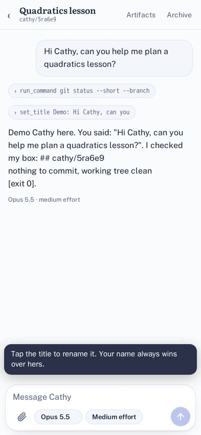

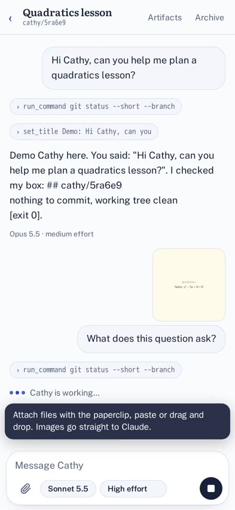

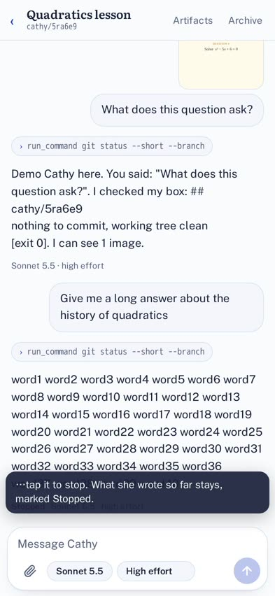

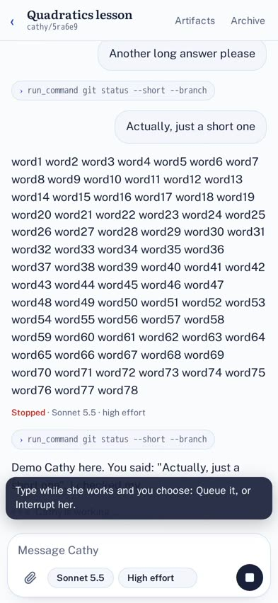

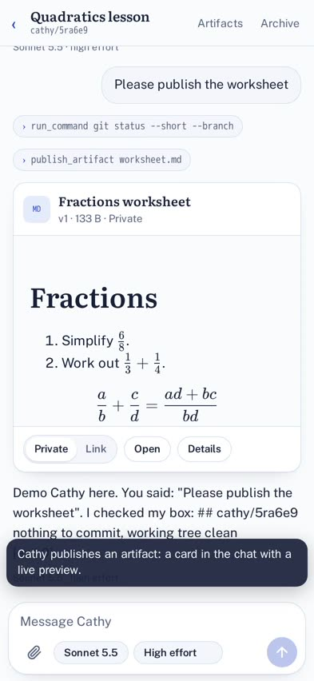

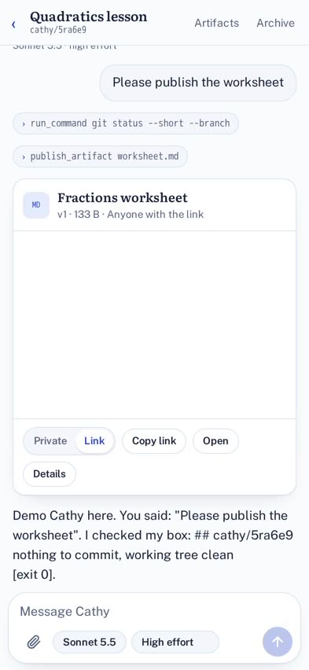

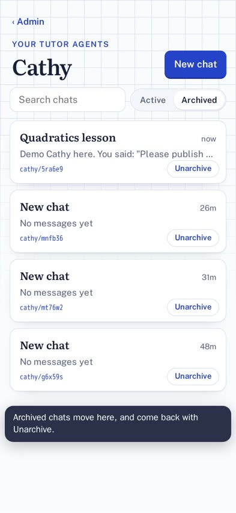
With real Claude
The preview clone ran the browser test against real Claude and a real box, on the final commit of PR #42 (2026-10-17T16:30:41.241Z). 16 of 17 steps passed. The one failure is sharing: the clone has no share Worker yet (see Live now).
| Step | What happened | |
|---|---|---|
| ✓ | Log in once | remembered for 400 days |
| ✓ | Admin home | |
| ✓ | Open Cathy | |
| ✓ | Start a new chat | chat id2kaj, branch cathy/id2kaj |
| ✓ | Chat box fits the phone | font 16px, Send fully on screen, disabled while empty |
| ✓ | Send a message | |
| ✓ | Cathy uses a tool and replies | reply 25679 ms after sending; tools: run_command git status | set_title Git status check; reply: "I'm on branch cathy/id2kaj, and there are no uncommitted changes.Opus 5.5 · medium effort" |
| ✓ | Chat survives a reload | 4 messages restored |
| ✓ | Chat is listed with a preview | Git status checknowI'm on branch `cathy/id2kaj`, and there are no uncommitted changes.cathy/id2kaj |
| ✓ | Cathy names the chat; Chris renames it | Cathy named it "Git status check"; renamed to "E2E renamed chat", kept after reload |
| ✓ | Pick a model and effort | Sonnet 5.5, low effort; kept after reload |
| ✓ | Attach an image; Cathy sees it | reply: "Pink.Sonnet 5.5 · low effort"; label: Sonnet 5.5 · low effort |
| ✓ | Stop a reply with the square button | stopped after ~488 words; label "Stopped · Sonnet 5.5 · low effort" |
| ✓ | Interrupt with a new message | first reply stopped; then: "interrupted okSonnet 5.5 · low effort" |
| ✓ | Cathy publishes an artifact into the chat | artifact 9ywd4mb8: Fractions worksheet (private) |
| ✓ | Open the artifact full screen | 3 maths expressions rendered |
| ✗ | Share by link; open it logged out | Error: share link gave 404 |


Recorded as it ran:
Bug the preview found in itself
That run reported preview-e2e: success even though a step failed (results.json says passed: false). The cause: node … | tee e2e.log takes the exit code from tee. The fix, set -o pipefail, is in patches/workflows.patch.
The full test, locally
The same test plus the local-only checks (search and archive, the hostile HTML artifact, security probes), using the stand-in model and local D1 and R2. 22 of 22 steps pass.
Step by step
| Step | Detail | |
|---|---|---|
| ✓ | Admin home | |
| ✓ | Open Cathy | |
| ✓ | Start a new chat | chat nccryf, branch cathy/nccryf |
| ✓ | Chat box fits the phone | font 16px, Send fully on screen, disabled while empty |
| ✓ | Send a message | |
| ✓ | Cathy uses a tool and replies | reply 6371 ms after sending; tools: run_command git status --short --branch | set_title Demo: Hello Cathy, what branch; reply: "Demo Cathy here. You said: "Hello Cathy, what branch are you on?". I checked my box: ## cathy/nccryfnothing to commit, working tree |
| ✓ | Chat survives a reload | 4 messages restored |
| ✓ | Chat is listed with a preview | Demo: Hello Cathy, what branchnowDemo Cathy here. You said: "Hello Cathy, what branch are you on?". I checked my box: ## cathy/nccryf nothing to commit, working |
| ✓ | Cathy names the chat; Chris renames it | Cathy named it "Demo: Hello Cathy, what branch"; renamed to "E2E renamed chat", kept after reload |
| ✓ | Pick a model and effort | Sonnet 5.5, low effort; kept after reload |
| ✓ | Attach an image; Cathy sees it | reply: "Demo Cathy here. You said: "What is in this image?". I checked my box: ## cathy/nccryfnothing to commit, working tree cl"; label: Sonnet 5.5 · low effort |
| ✓ | Stop a reply with the square button | stopped after ~25 words; label "Stopped · Sonnet 5.5 · low effort" |
| ✓ | Interrupt with a new message | first reply stopped; then: "Demo Cathy here. You said: "Short one instead". I checked my box: ## cathy/nccryfnothing to commit, " |
| ✓ | Cathy publishes an artifact into the chat | artifact ui75z8wj: Fractions worksheet (private) |
| ✓ | Open the artifact full screen | 3 maths expressions rendered |
| ✓ | Share by link; open it logged out | http://localhost:8788/a/p39rk3jxz4ivk8pxawv6 → 200 in a fresh browser with 0 cookies |
| ✓ | Back to private: the link stops working | http://localhost:8788/a/p39rk3jxz4ivk8pxawv6 → 404 |
| ✓ | Artifacts page: versions, new link | old link 404, new link 200 |
| ✓ | A hostile HTML artifact is sandboxed | origin: null; cookies: blocked; storage: blocked; parent page: blocked; admin API: blocked |
| ✓ | Search, archive and unarchive | found by search; archived, then back in Active |
| ✓ | Security probes | 16 checks passed |
| ✓ | Dark mode |


The key moments
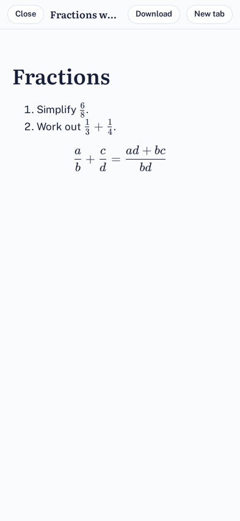
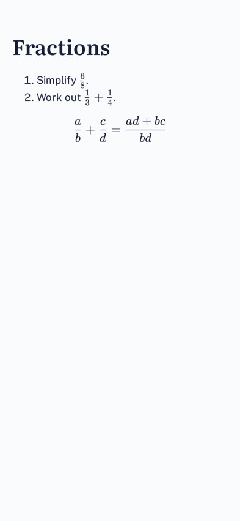
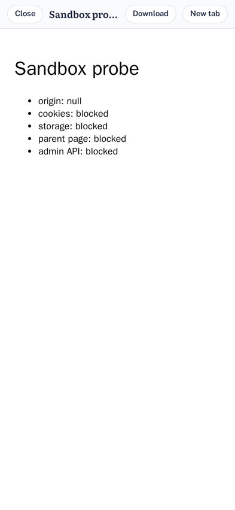
Every screenshot
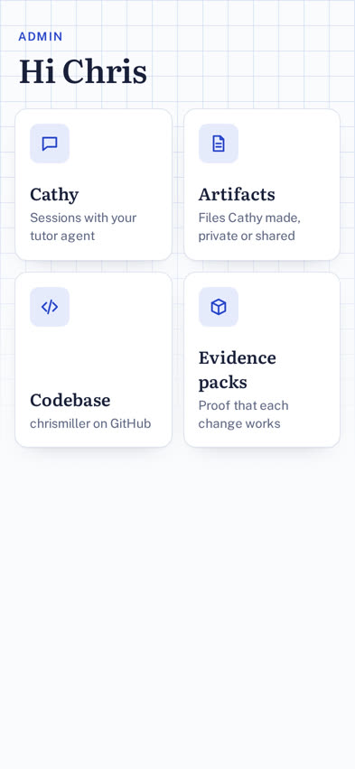
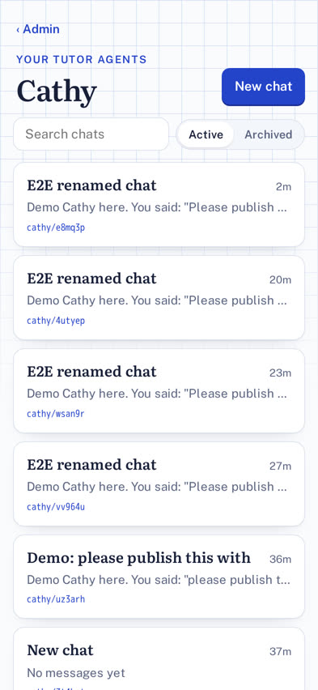
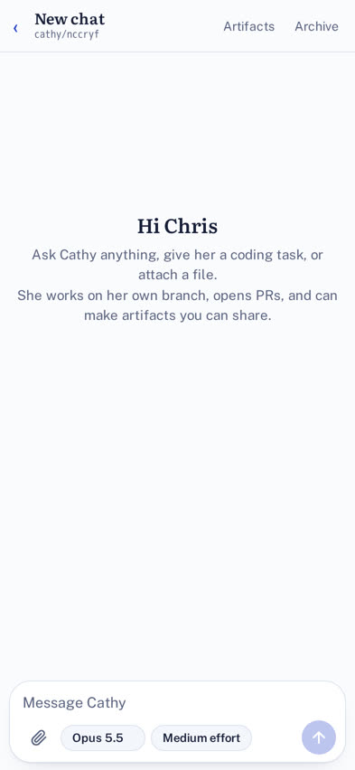
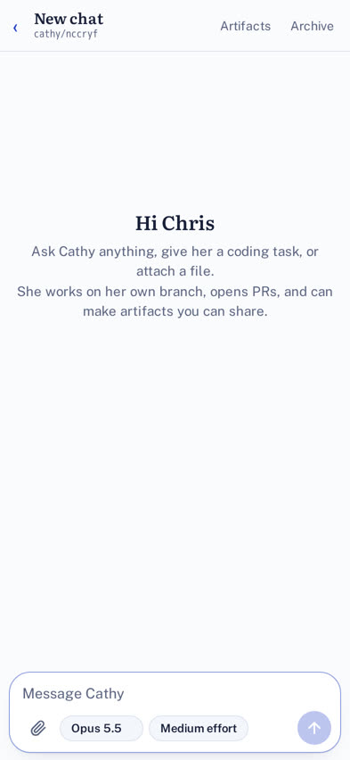
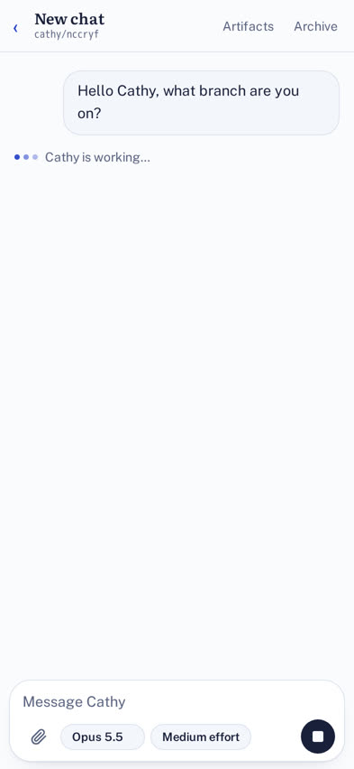
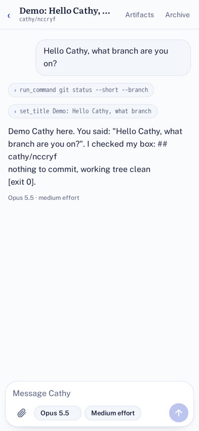
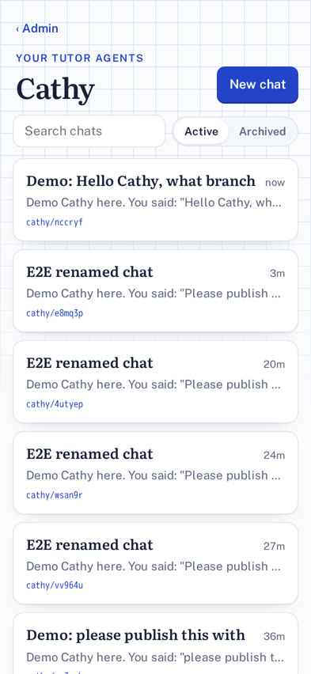
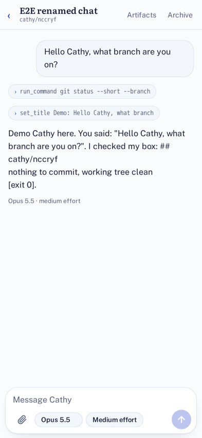
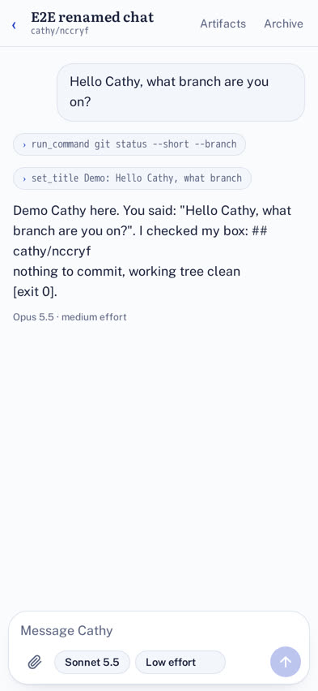
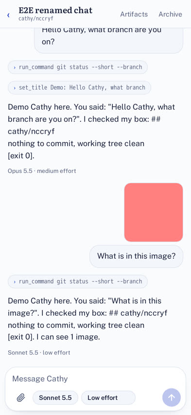
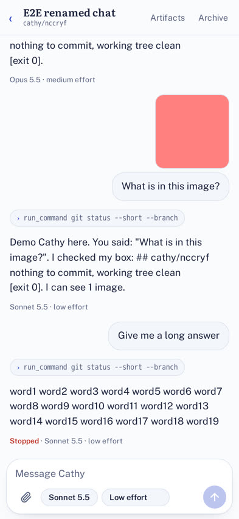
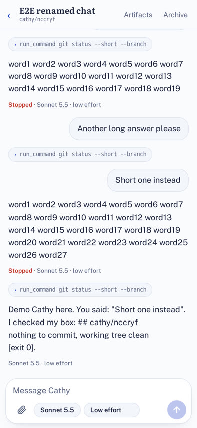


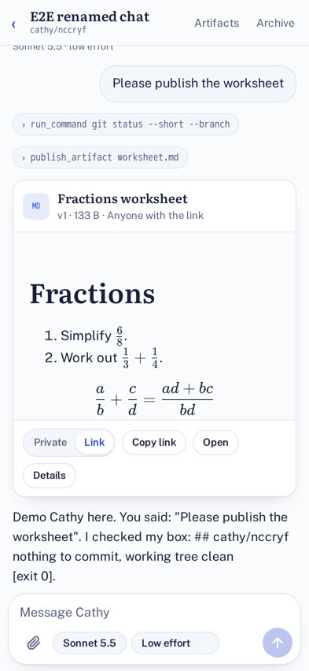
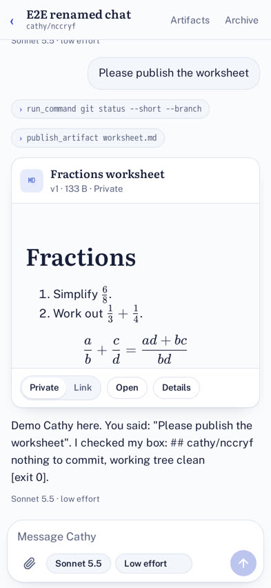
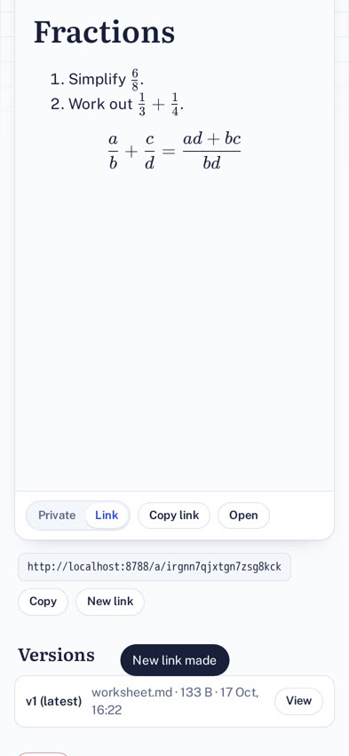
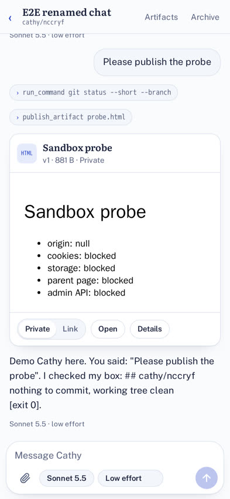
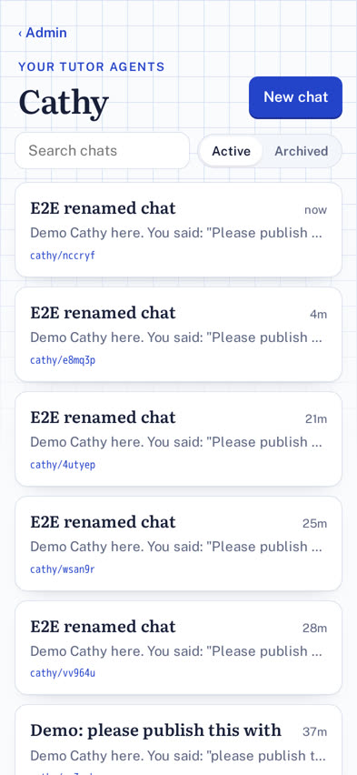

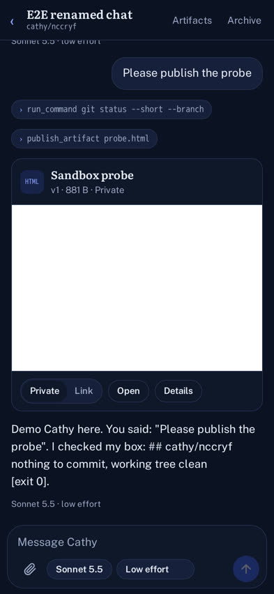
Security checks
| Check | Expected | Actual | |
|---|---|---|---|
| ✓ | Private artifact via its old share link | 404 | 404 |
| ✓ | Old link after "New link" | 404 | 404 |
| ✓ | New link | 200 | 200 |
| ✓ | HTML artifact in admin: origin | blocked | null |
| ✓ | HTML artifact in admin: cookies | blocked | blocked |
| ✓ | HTML artifact in admin: storage | blocked | blocked |
| ✓ | HTML artifact in admin: parent page | blocked | blocked |
| ✓ | HTML artifact in admin: admin API | blocked | blocked |
| ✓ | Share: wrong token | 404 | 404 |
| ✓ | Share: admin API path | 404 | 404 |
| ✓ | Share: Cathy share path directly | 404 | 404 |
| ✓ | Share: path traversal | 404 | 404 |
| ✓ | Share: POST | 405 | 405 |
| ✓ | Reading another chat's upload | 404 | 404 |
| ✓ | 26 MB upload | 413 | 413 |
| ✓ | Path-traversal file name is cleaned | passwd | passwd |
Unit tests check the same rules without a browser: share/src/index.test.ts (only one route, nothing else reaches Cathy) and cathy/worker/src/api.test.ts (private, wrong, old tokens; Markdown can't break out of its page).
Unit tests
99 pass, 0 fail, up from 70. New areas: registry (names, uploads, artifacts, versions, R2), API routes, share Worker, box files, models, conversation (stop, interrupt, thinking, labels), and the artifacts skill. Full output: unit-tests.txt.
Test-first: stop/interrupt and memory after a stop, the share route rules, box-files, and the artifacts skill each began as a failing test. The earlier registry and API code got its tests straight after. For that code I checked that removing a key guard turns a test red (for example, the "another chat's artifact" check).
Load-bearing code
The share Worker forwards one route, bare
const TOKEN = /^\/a\/([a-z0-9]{20})(\/download)?\/?$/;
…
// Only the token and the download flag go through: no query string, no cookies, no other headers.
const target = new URL(`https://cathy.internal/share/a/${m[1]}${m[2] ?? ''}`);
const res = await env.CATHY.fetch(new Request(target, { method: request.method }));
Only link artifacts are ever found by token
async shared(token) {
if (!/^[a-z0-9]{20}$/.test(token)) return null;
… "SELECT * FROM artifacts WHERE token = ? AND visibility = 'link'"
After a stop, memory keeps only finished steps
/** After a stop: drop tool calls that never got a result (and empty messages left behind). */
export function completeSteps(messages) {
const answered = new Set(… toolCallId of every tool result …);
return forMemory(messages.map((m) => … keep tool-call only if answered.has(p.toolCallId) …));
}
Every stored file runs sandboxed
export const SANDBOX_CSP = "sandbox allow-scripts allow-modals allow-downloads allow-popups; default-src * data: blob: 'unsafe-inline' 'unsafe-eval'";
Before this goes live
- Apply
patches/workflows.patchon main. The command is at the top of the file and in Live now. - Check
share-deploygoes green, then switch one artifact to Link and open it on your phone. - Later:
artifacts.withchris.ukonce the domain moves (one route, one var).
Reproduce
npm ci npm test # 99 unit tests npm run typecheck:workers npm run dev:cathy # admin on :8787 (stand-in model) npx wrangler dev -c share/wrangler.jsonc --port 8788 # share links BASE_URL=http://localhost:8787 OUT=e2e-out npm run e2e BASE_URL=http://localhost:8787 OUT=walk node packs/cathy-agent-manager/walkthrough.ts # the user walkthrough node packs/cathy-agent-manager/build.mjs # rebuild this page from e2e-out (copy results into media/)
Local run 2026-10-17T16:24:18.035Z against http://localhost:8787. Real run 2026-10-17T16:30:41.241Z: Actions log.